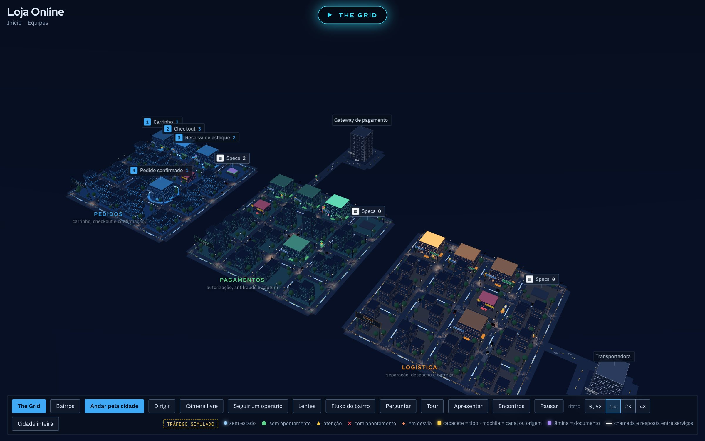
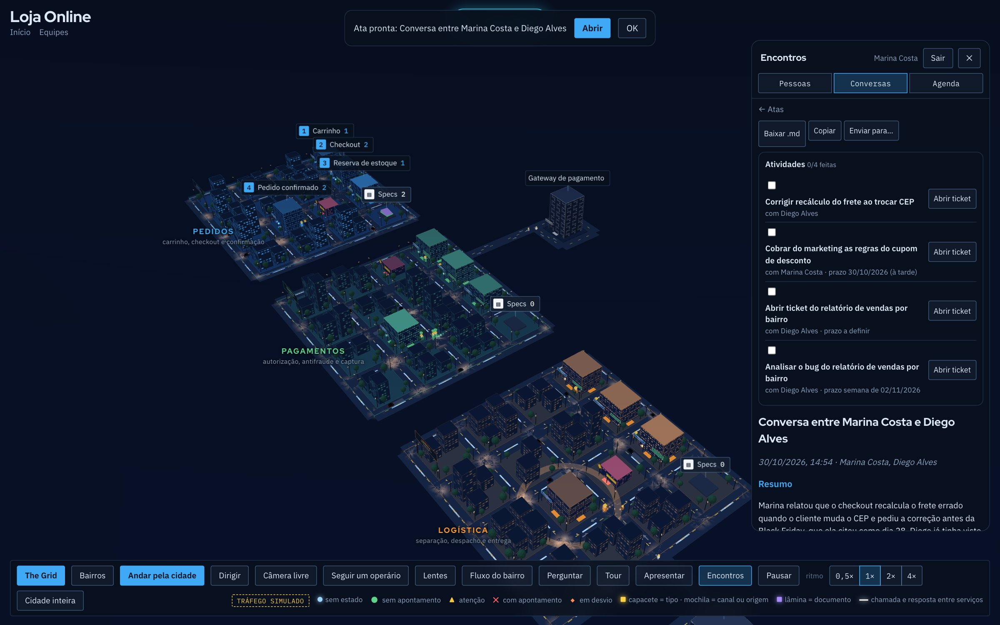
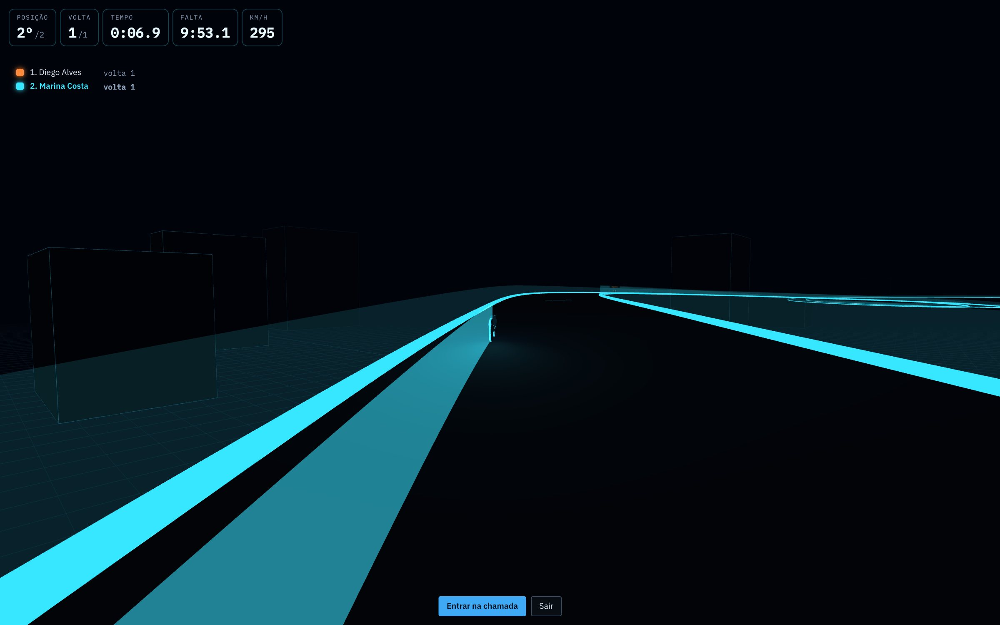
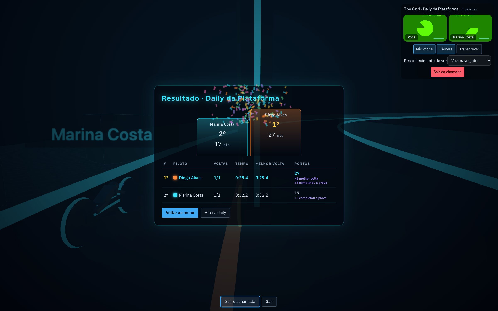

Cidade 3D do sistema
Bairros, prédios, ruas e desvios mostram como o sistema funciona. A fila cresce e o prédio cresce; algo falha e acende o desvio vermelho.
Cada módulo é um bairro, cada etapa é um prédio e cada requisição é alguém andando pelas ruas. O time conversa, se reúne e corre junto dentro da cidade, e a reunião sai com as atividades escritas pelo Claude.

Da arquitetura ao papo do dia a dia: o SystemCity junta a visão do sistema, a comunicação do time e um pouco de diversão.
Bairros, prédios, ruas e desvios mostram como o sistema funciona. A fila cresce e o prédio cresce; algo falha e acende o desvio vermelho.
Ligue suas APIs, webhooks e servidores MCP. Cada evento real vira um operário andando pela cidade.
Chat direto e em grupo, chamadas de voz e vídeo com compartilhamento de tela, e quem está online andando pela cidade.
Ligue a transcrição na chamada. No fim, o Claude escreve a ata: resumo, decisões, atividades com responsável e candidatos a ticket.
Crie equipes, adicione as pessoas pelo nick e dê papéis de dono, admin e membro. Cada equipe ganha conversa e chamada próprias.
Corrida de moto multiplayer estilo Tron, com chamada de voz no canto da tela. A daily nunca mais vai ser chata.
Ninguém precisa anotar. A chamada é transcrita, e o Claude que roda na sua máquina transforma a conversa em atividades.

Crie uma corrida, chame o time e conversem pela chamada de voz enquanto pilotam. Ao final, pódio, pontos e placar geral.


Escolha um nick, crie a equipe e adicione as pessoas pelo nick delas.
Descreva os módulos num arquivo, ou parta da cidade de exemplo. Os documentos de cada módulo viram uma torre no bairro.
Conecte APIs, webhooks e servidores MCP pelo bridge, e a cidade passa a mostrar o tráfego real. npm run demo mostra como.
Crie a conta, chame o time e marque a primeira daily no The Grid.